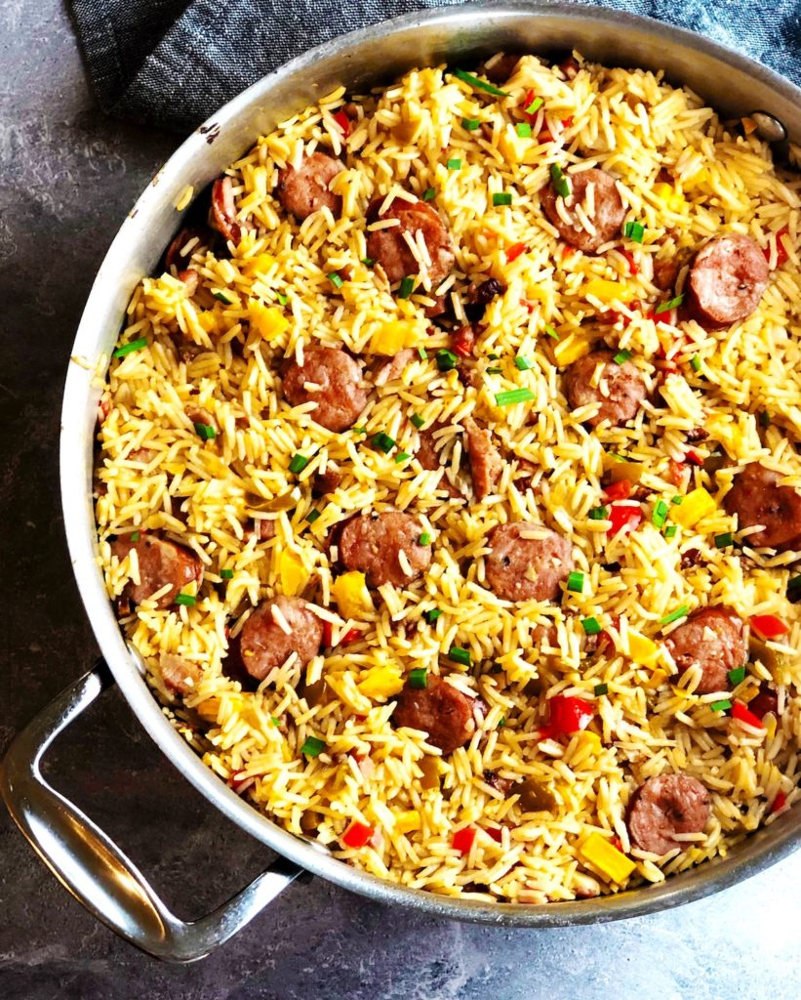

Jambalaya

Description
This is a great recipe for jambalya. It is a family secret recipe now
now available to the public. Enjoy.
Ingredients
- Andouille sausage
- Bacon
- Chicken stock
- Rice
- Onions
- Garlic
- Red and green peppers
- Hot sauce
Directions
- Saute the bacon and aromatics. You want to chop the veggies finely.
- Add the cajun sausage and cook that under it begins to crisp up a bit. The bacon, sausage
in addition to the aromatics we cooked in the first step are going to be the flavor for this
delicious and easy jambalaya.
- Now add the rice, stock and hot sauce. You just cook this like you would a pot of rice. So simple!